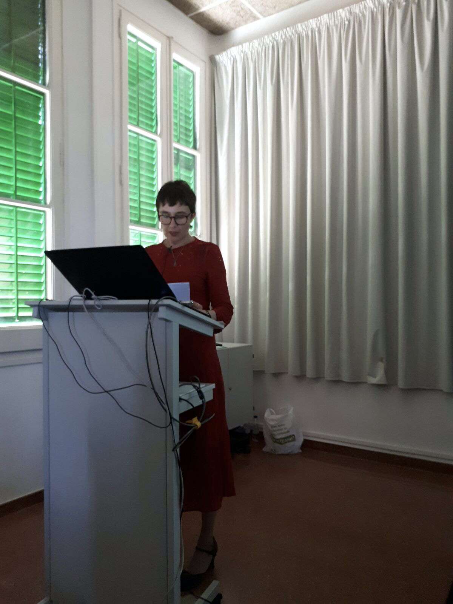

XERRADES I TALLERS PER PARES I EDUCADORS
Adreçats a mares, pares i educador@s de llars d'infants, escoles de primària i instituts de secundària.
Les xerrades tenen una duració aproximada de dues hores, part de les quals es dediquen a l'exposició de les idees principals i una altra part a preguntes i debat
Els tallers duren més estona, fet que permet fer activitats que ajuden a experimentar i aprofundir les idees tractades.
Les xerrades i tallers tracten sobre salut i educació infantil i de l'adolescent.

Possibles temes a tractar:
Què és l'autoestima? I els vincles segurs?
La necessitat de límits i com aplicar-los.
La importància de la comunicació emocional entre pares/mares i fills/es.
Entendre els adolescents per acompanyar-los millor.
El cos i l'afecte al sí de la família: fomentar una sexualitat saludable.
Transmetre bons hàbits i valors adequats als nostres fills i filles.
Creixent entre pantalles: desenvolupament saludable a l'era d'internet.
Mindfulness per millorar la salut i la convivència familiar.
Contactar:
C/Casanova 46, 4rt 1a, Barcelona.
Mb: 696453277
Email: trescoca@gmail.com